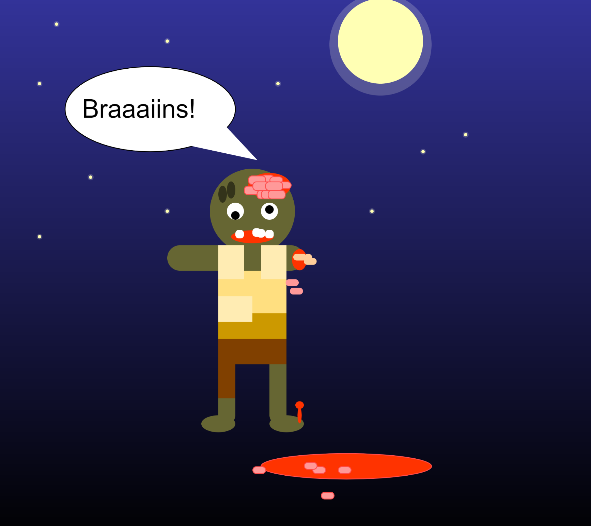

Tier

Von den Grabsteinen und Kreuzen gibt es jeweils ein
Ursprungsobjekt.
Weitere Objekte können durch die
entsprechenden Funktionen erzeugt werden, indem der Funktion in
Pixeln gesagt wird wie weit entfernt vom ursrünglichen Objekt sie
stehen sollen.